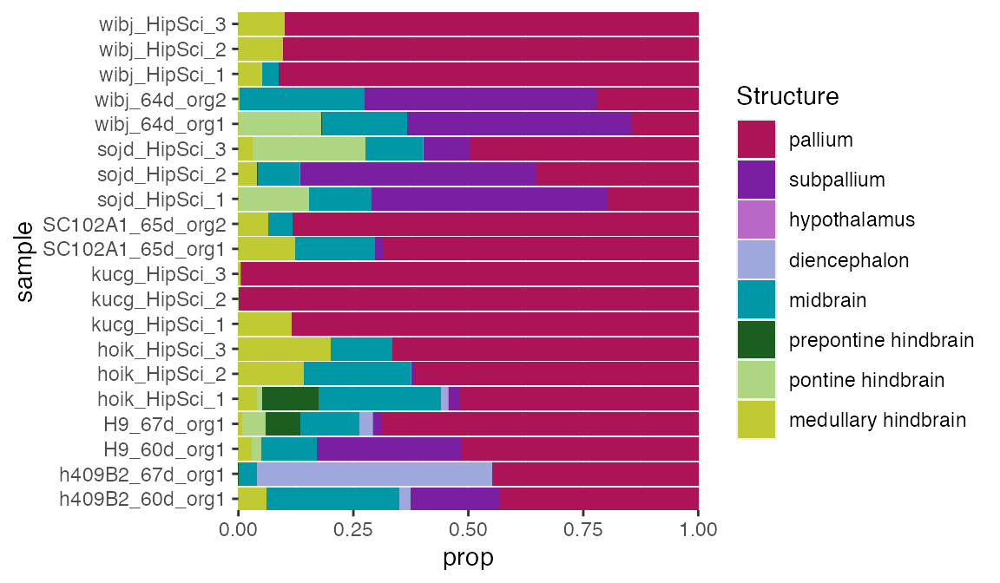

deconvolution.RmdUsing the ABA ISH reference data in VoxHunt, we can also estimate the proportion of regional identities in organoids from bulk RNA-seq data without having to rely on single cell data with all celltypes we might expect. In the manuscript, we show that this works very well, even considering the presence of NPCs and Neurons in the same organoid. Here, we demonsrate this using pseudo-bulk data (summarized scRNA-seq data) from 2 month old orgnaoids which is included in VoxHunt.
We found that selecting markers is very important for successful deconvolution, so we select two sets of markers here: One broad set (top50) which we use to preselect features and balance contribution of different brain regions in the feature set. A second set (top15) is used as marker genes as input for the currently implemented deconvolution tool EPIC.
# DE at level 2
markers <- structure_markers('E13', annotation_level = 'custom_2') %>%
filter(gene%in%rownames(example_pseudobulk))
# Structures to be included in the deconvolution
# Here, we use all major structures at level 2
involve_regions <- c(
'pallium', 'subpallium',
'diencephalon', 'midbrain', 'hypothalamus',
'prepontine hindbrain', 'pontine hindbrain', 'medullary hindbrain'
)
# Select top 15 markers
top15 <- markers %>%
filter(group%in%involve_regions) %>%
group_by(group) %>%
top_n(15, auc) %>%
{unique(.$gene)}
# Select top 50 markers
top50 <- markers %>%
filter(group%in%involve_regions) %>%
group_by(group) %>%
top_n(50, auc) %>%
{unique(.$gene)}Using these gene sets, we can now deconvolute the RNA-seq data. We also transform the ISH intensities to pseudo-TPMs as we found that this increases performance. The deconvolute() function in VoxHunt returns a data frame with proportions of different brain regions for each sample in the input data.
prop_df <- deconvolute(
example_pseudobulk[top50, ], top15,
involve_regions = involve_regions,
pseudo_tpm = T
)The results can be plotted with ggplot.
ggplot(prop_df, aes(prop, sample, fill=factor(struct, levels=struct_names_custom2))) +
geom_bar(stat='identity') +
scale_fill_manual(values=struct_colors_custom2) +
scale_x_continuous(expand=c(0,0)) +
scale_y_discrete(expand=c(0,0)) +
labs(fill='Structure')